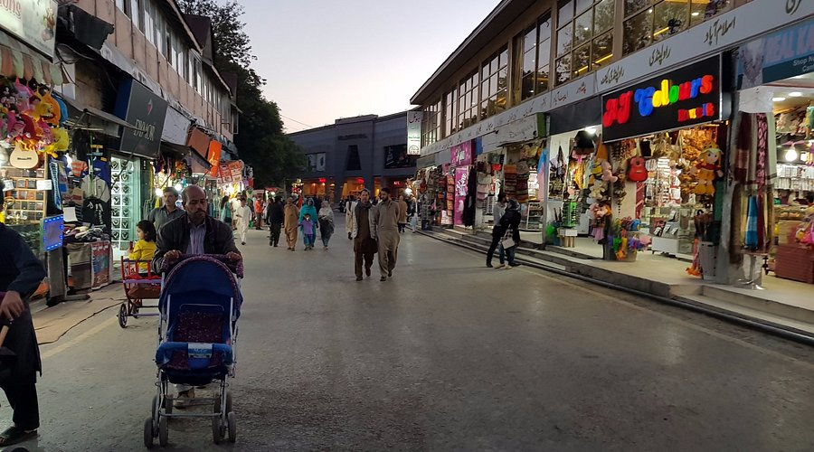
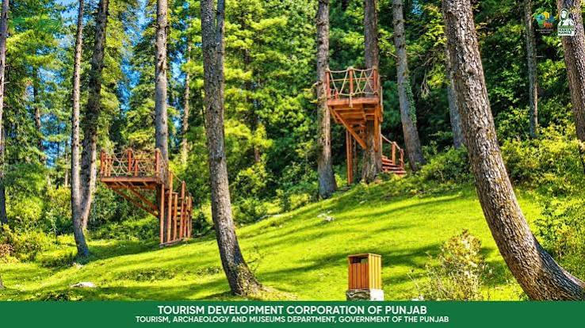
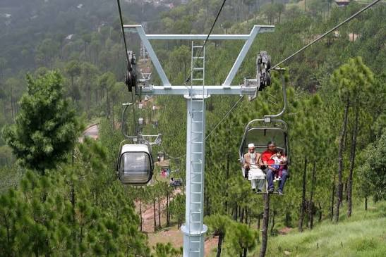
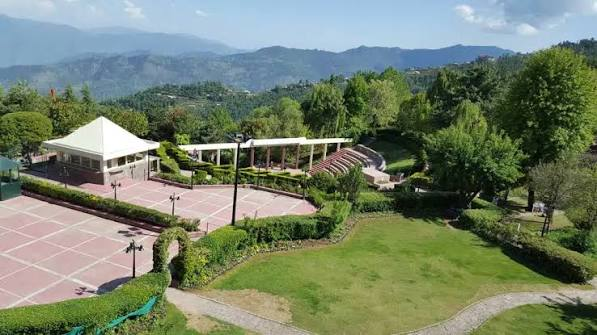
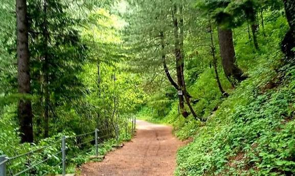

1. Mall Road
The lively central promenade of Murree, famous for local handicrafts, dry fruits, warm Kashmiri tea, and evening walks.
Explore the most popular scenic spots, family parks, and viewpoints across Murree and the surrounding hills.

The lively central promenade of Murree, famous for local handicrafts, dry fruits, warm Kashmiri tea, and evening walks.

A popular viewpoint offering panoramic views of the twin cities of Rawalpindi and Islamabad along with a 1.5 km chairlift ride.

Located at the highest point in Murree town, offering quiet walking trails and distant views of the mountains of Kashmir.

Located 15 km from Murree, famous for Pakistan's highest chairlift and cable car system soaring above dense pine forests.

A serene, lush green hill resort on the Kashmir Road known for scenic golf views, misty valleys, and peaceful family retreats.

A historic 4 km level walking trail connecting Ayubia to Dunga Gali, ideal for beginner hikers, students, and families.